高等数学教程 （8）
二重积分
概念
他表示一个曲顶柱体的体积，现在把区间里的小区快切割一下
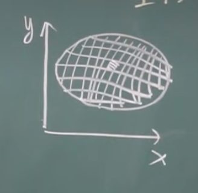
现在朝上面做一个柱体，产生了一个微元体积
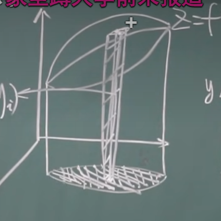
现在对小区间求和：
这个$\lambda$每个小区域的大小。若这个的极限存在，那就有：
性质
1）
2)如果$D = D_1+D_2$,然后就有
3)对于$f(x,y) \equiv 1$
4)$f(x,y)\leq g(x,y)$
5)
6)假设$m\leq f(x,y)\leq M$,
推广：
计算(直角坐标)
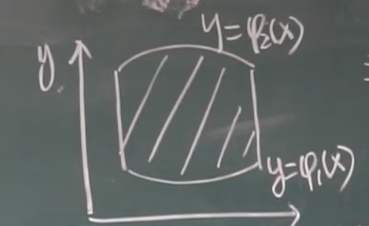
假设截面是这个
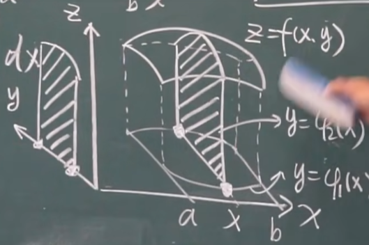
于是，可以看作先对 y 再对 x做积分：
于是：
例题1：
$\iint_D xyd\sigma,y=1,x=2,y=x$
原式=$\int_1^2\int_{1}^{x}xydydx=\int_1^2x[\frac{y^2}{2}|_1^x]dx=\int_1^2{x(\frac{x^2}{2}-\frac{1}{2})}=\frac{x^4}{8}-\frac{x^2}{4}|_1^2=\frac{9}{8}$
我们也有先对X再对Y做积分：
注意，对于Y，左边是下限，右边是上限
例题2：
$\iint_D y\sqrt{1+x^2-y^2}d\sigma,D:y=x,x=-1,y=1$
法一：$\int_{-1}^1dx\int_{x}^{1}y\sqrt{1+x^2-y^2}dy=0.5$
法二：$\int_{-1}^1dy\int_{-1}^{y}y\sqrt{1+x^2-y^2}dx$
总结
对于积分区域是长方形的：
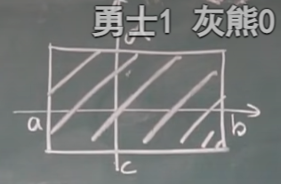
对于积分区域是长方形的，且f(x,y)=$f_1(x)f_2(x)$
计算（极坐标）
主要应用在曲线（圆类）比较多
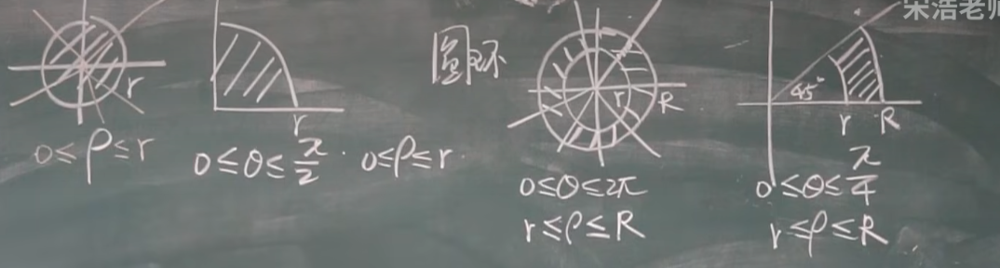
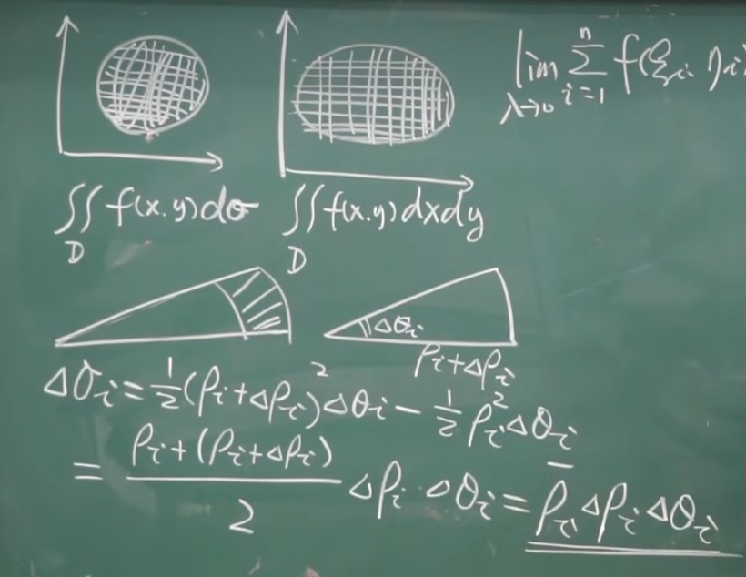
于是：
小心不要丢掉$\rho$!
如：
例题:$\iint_D e^{-x^2-y^2}dxdy$
做代换，得到：
一个重要的推论：
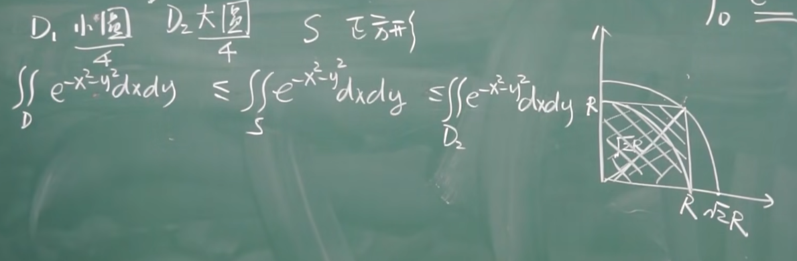
同时，作为长方形底面积式子：得到：
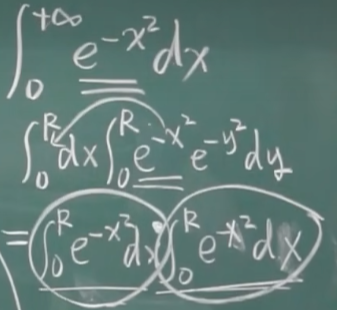
于是有一个著名的结论：
例子：$\iint_D \arctan\frac{y}{x}dxdy$
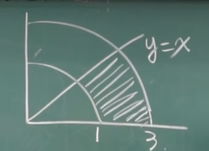
D见上图：
解答：=$\int_0^{\frac{\pi}{4}}d\theta \int_1^3 \arctan(\tan\theta)\rho d\rho=\int_0^{\frac{\pi}{4}}\theta\int_1^3\rho d\rho=\frac{\pi^2}{8}$
二重积分的换元法
首先可以有：
作为一个经典的变换！对于更一般的：
1)$x=x(u,v),y=y(u,v)$
2)$J_{(u,v)}=\frac{\partial (x,y)}{\partial (u,v)}$下：
例题：$\iint_D e^{\frac{y-x}{y+x}}dxdy$
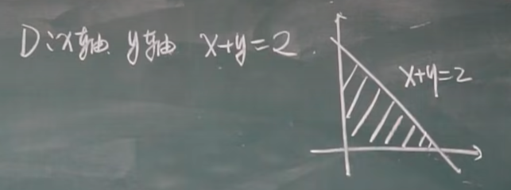
令：$u=y-x,v=y+x$于是：
->
三重积分
定义：
可以理解为：将密度考虑成一个关于空间的函数即可，然后在原有空间上增加一个维度！
使用切丝法逐步切：
例如：
例如：$\iiint_D z^2dxdydz$,$D:\frac{x^2}{a^2}+\frac{y^2}{b^2}+\frac{z^2}{c^2}=1$
而长轴短轴的变化是：
故：因为椭圆的面试是$\pi a’b’$
柱面坐标
使用：
表达坐标的系统叫柱坐标系统！
对于一个长方体：$a \leq x \leq b,c \leq x \leq d,e \leq x \leq f$且函数可以完全分离：